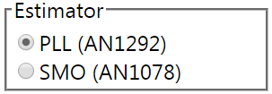
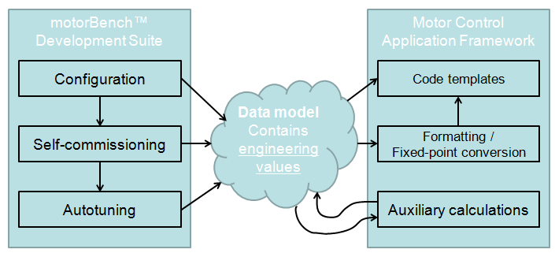

3.4. Code Generation¶
The MCAF utilizes the FreeMarker templating engine for generating code. This section describes an overview of the code generation process; while it is not necessary for understanding the output code, it may be helpful to understand some of the context behind the MCAF.
3.4.1. Why Code Generation?¶
Some of the reasons for using code generation were mentioned in the introduction:
- Management of multiple hardware configurations — by using code generation, the MCAF can support the many combinations of processor, board, PIM, motor, and load with a single firmware package.
- Automation of the tuning process — motorBench® Development Suite includes algorithms that will automatically tune the current and velocity controllers.
There are also some more subtle reasons:
The C language has only limited support for computation at design time — essentially there are two mechanisms:
- constant-folding — the compiler will turn expressions like
(3*7)+1into a single value (22) at compile-time rather than run-time - preprocessor — the C preprocessor will substitute text in
#defineexpressions at compile-time (just prior to compilation)
These do not provide features for testing or verification. They are very fragile and often lead to errors, which either occur silently or with cryptic compiler messages. These issues are discussed in more detail in the next section on configuration parameters.
- constant-folding — the compiler will turn expressions like
Code generation can offer UI-driven flexibility. For example, motorBench® Development Suite has the capability to present a choice among several alternative options (for example: choosing a sensorless position estimator)
and then utilize appropriate source files from the MCAF firmware package to implement the selected option. (Note: the initial version of motorBench® Development Suite does not provide this feature, but it is planned for a future version.)
3.4.2. How Does Code Generation Work?¶
Code generation in the MCAF is driven by a templating engine that operates on a static firmware package and a dynamic data model.
The templating engine consists primarily of FreeMarker, but has other components as well, for example to support the use of configuration files, conditional code generation, and Jython scripts.
The firmware package contains a fixed (static) set of template files, configuration files, and Jython scripts used to generate the source code.
The data model is a set of named key-value pairs that is used by the code generation application (CGA, of which motorBench® Development Suite is the primary example) to organize different items of information in known places that are referenced by the firmware package. The data model will generally change from one code generation run to the next.
The templating engine renders files in the firmware package, using the data model to determine the parts of the output files which are dependent on input data from the CGA. In some cases, the rendering operation is just a verbatim copy with no input dependencies; in others, complex calculations may occur; but in many cases, rendering is just simple expression evaluation and substitution.
For example, we could have the template file shown in Listing 3.1, along with the data model shown in Listing 3.2:
There was an old lady of ${PLACE}
Who was baked by mistake in a ${THING}
To the household's disgust
She emerged through the crust
And exclaimed, with a yawn, "${QUOTE}"
PLACE: Rye
THING: pie
QUOTE: Where am I?
This would render into the output file shown in Listing 3.3:
There was an old lady of Rye
Who was baked by mistake in a pie
To the household's disgust
She emerged through the crust
And exclaimed, with a yawn, "Where am I?"
The template contains special placeholders such as ${PLACE} and ${THING}
which FreeMarker calls interpolations.
These contain an expression which is evaluated and substituted into the output
text.
Such an example isn’t very useful for motor control, but the same expression evaluation and substitution mechanism can also be used to generate C code or comments, as shown in Listing 3.4 and Listing 3.5, which render to Listing 3.6:
/*
* L = ${(motor.L*1000)?string["#.###"]} mH
* R = ${motor.R?string["#.###"]} ohms
* Time constant = ${(motor.L/motor.R * 1000)?string["#.###"]} ms
* Your inductance is <#compress>
<#if (motor.L < 0.001) >too low
<#elseif (motor.L > 0.01) >too high
<#else >just right
</#if></#compress>!
*/
<#assign velocity_scale=ScaleFactor(6000.0/30*PI, "rad/s").q15() >
/* Maximum motor velocity, converted to integer counts:
* ${(motor.max_velocity*30/PI)?string["####.##"]} RPM
* ${motor.max_velocity?string["####.##"]} rad/s
*/
#define MAX_VEL ${velocity_scale.toCounts(motor.max_velocity)}
motor:
L: 1.234567e-3
R: 6.543210e-1
max_velocity: 234.56
ScaleFactor: <some Java object created to facilitate engineering conversion>
PI: 3.141592653589793
/*
* L = 1.235 mH
* R = 0.654 ohms
* Time constant = 1.887 ms
* Your inductance is just right!
*/
/* Maximum motor velocity, converted to integer counts:
* 2239.88 RPM
* 234.56 rad/s
*/
#define MAX_VEL 12233
3.4.2.1. Data Model Preparation¶
Values can end up in the data model by several mechanisms:
- From the CGA (motorBench® Development Suite). This will typically occur when there are values needed from customer-entered configuration data (motor name, number of poles, etc.) or when the values are computed by the CGA itself (automatically-tuned control loop gains).
- From a configuration file in the MCAF firmware package. This will typically be used to manage certain constants that are common to the application framework, but should be decoupled from the CGA, so that they can be updated as part of improvements in the application framework package.
- From a Jython script in the MCAF framework package. This will typically be used to handle computations that are not part of the CGA’s core functions, such as slew rates or other derived constants that are closely coupled to the application framework package itself.
The templating engine doesn’t care where values came from, only that the named locations in the data model which are referenced by templates in the firmware package contain valid values that can be used to generate text strings in output files.
The process of determining the data model can be envisioned as shown in Figure 3.4. In general, motorBench® Development Suite and the MCAF provide or compute engineering values, which are then represented as fixed-point integers in the generated code by appropriate choices of engineering unit scaling factors.
Figure 3.4 Data model production process
3.4.2.2. Conditional code generation¶
Sometimes we need to provide different content based upon something in the data model: for example, selecting among several position/velocity estimators. The templating engine supports this.
- Per-character/per-line conditional generation
There are conditional
features available in FreeMarker (the
<#if>directive, for example) which behave similarly to the#ifpreprocessor directives in C, except that they are processed at code-generation time rather than at compile-time. These may be used sparingly to enable or disable particular lines of code, or to select from more than one alternative. - Per-file conditional generation For inclusion or exclusion of entire modules, there are features in the templating engine that allow the template author to associate a particular source file with a “tag” to designate that this source file will be rendered only if the tag is present in a known location in the data model. This relieves the CGA from having to know which files should be included or excluded; instead, the CGA lists which tags to include as named features, and the application framework package then contains the association of tag name with source files.
3.4.2.3. Further Information¶
For further information on the code generation process, please consult the Microchip Applications staff.